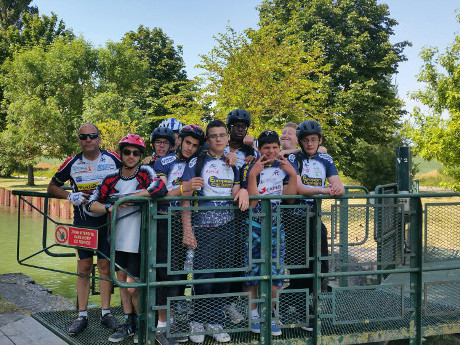
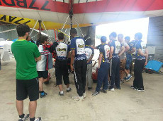
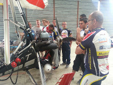

|
Mardi, 30 Juin 2015 00:00 |

|
Les 15 et 16 juin, Jean –Christophe, professeur de sport à l’EPMS, a organisé comme tous les ans, la traditionnelle sortie vélo le long du canal de l’Ourcq. Pour l’accompagner, il avait fait appel à 2 enseignants et un chef de service.
|
|
Deux groupes de niveaux ont été constitués :
Le 15 juin ,le premier groupe (composé de 11 jeunes) a effectué une sortie de 30 kilomètres le long du canal de l’Ourcq avec la découverte de l’usine élévatrice de Trilbardou.
Le 16 juin, le second groupe (composé de 10 jeunes a également visité l’usine, mais a fortement augmenté le kilométrage( 45 kms environ) puisque nous nous sommes rendus à Esbly où nous avons eu la chance de voir les avions et ULM bien alignés dans les hangars de l’aérodrome.
Le midi, nous avons pique-niqué dans une prairie au bord de l’eau et à l’abri d’un soleil bien présent.
Jean- Christophe a eu la bonne idée d’associer le centre de la Gabrielle à ce projet, ainsi, plusieurs jeunes ont pu partager ces moments sympathiques en notre compagnie.
Nous avons pu utiliser pour la première fois des vélos tout neufs mis à notre disposition par l’établissement. Philippe, le chef de service ,a donné des indications précieuses sur l’utilisation des dérailleurs et sur le respect du matériel.
Cette sortie à la fois sportive et culturelle , nous a permis d’apprendre des choses intéressantes et passionnantes.
|
 |

|
"apprendre des choses intéressantes et passionantes"
|

|
|
Voici un court résumé de ce que nous avons retenu :
Usine de Trilbardou :
l’usine élévatoire de Trilbardou est une machine hydraulique qui permet d’alimenter le canal de l’Ourcq en eau de la Marne. Elle se trouve en contrebas du canal, à 39 kms du bassin de la Villette. C’est Napoléon III qui est à l’origine du projet dont l’objectif était d’alimenter Paris en eau courante.
Aérodrome de Meaux-Esbly :
L’aérodrome est un aérodrome civil ,ouvert à la circulation aérienne et publique ,situé sur la commune de l’ISLE et Villenoy à 5 kms de Meaux. Il est utilisé pour la pratique d’activités de loisirs et de tourisme (aviation légère et hélicoptère).Il est géré par Aéroports de Paris
On y trouve différents types d’avions : Les autogires, les ULM (ultra léger motorisé) et hélicoptères
|
|
|
|
Mise à jour le Jeudi, 22 Octobre 2015 18:02 |